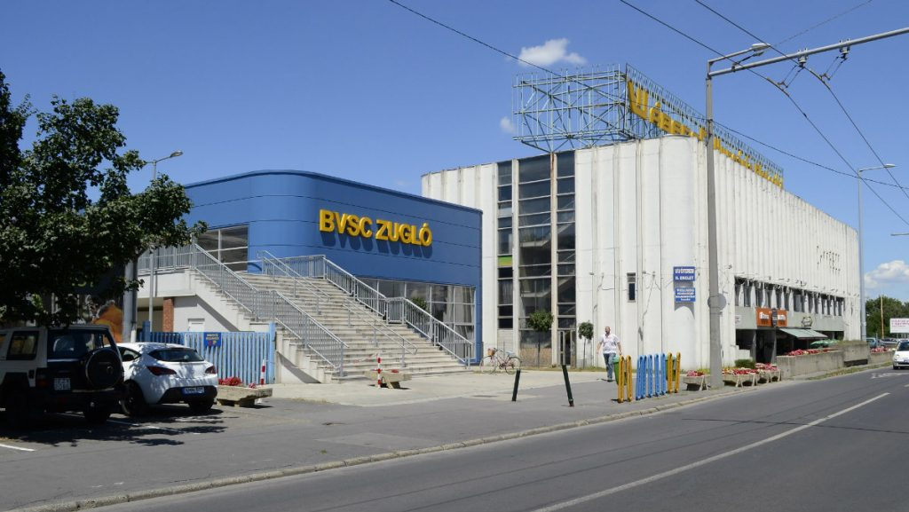
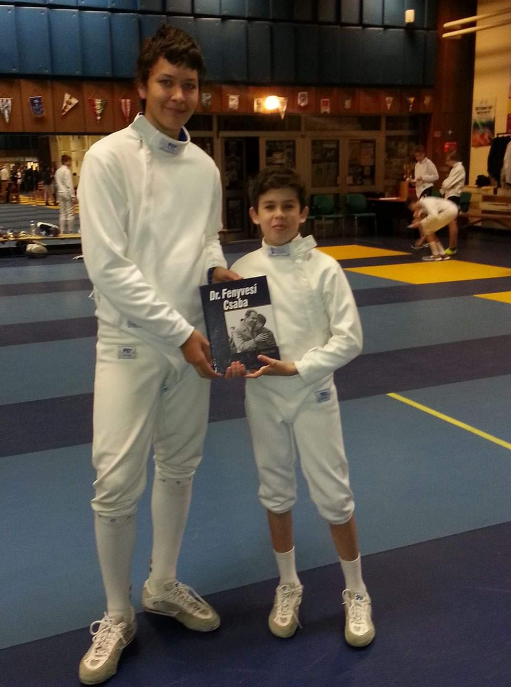
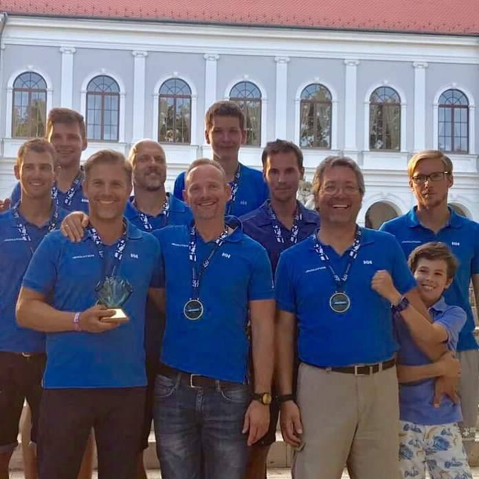
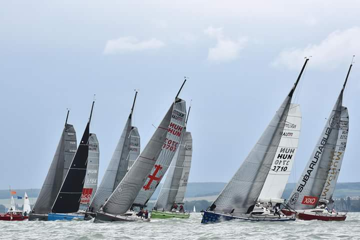
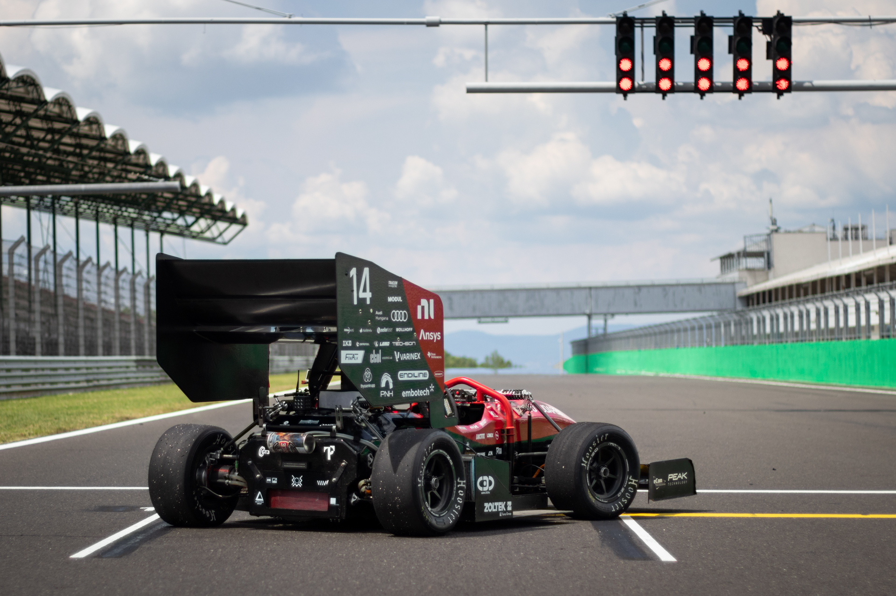

A gimnáziumi évek alatt a szabadidőm nagy részét sportolással töltöttem. 7 éven keresztül voltam a BVSC vívó szakosztályának aktív tagja, ezen belül a párbajtőrt választottam.
 2014 nyarán kaptam először lehetőséget arra, hogy részt vegyek egy Balatoni vitorlásversenyen, a Revolution fedélzetén, amely egy Nau370run típusú hajó. Azóta szinte minden évben a csapat stabil tagja voltam. Több nagyobb eredményt is sikerült elérnünk, ezek közé tartozik egy Kékszalag győzelem 2017-ben, a saját osztályban, valamint egy II. hely az országos bajnokságon, szintén 2017-ből.
 Amikor 2019 őszén bekerültem az egyetemre, rögtön jelentkeztem az egyetem egyik versenycsapatába, mely nem más mint a BME Formula Racing Team. Mostmár több mint egy éve vagyok a csapat tagja, és fő területem az aerodinamika. A csapat által több különböző programot ismertem meg, melyek világszínvonalúak, és nagyobb csapatok, cégek is használják őket. Ilyen többek között a Creo, valamint az Ansys.
